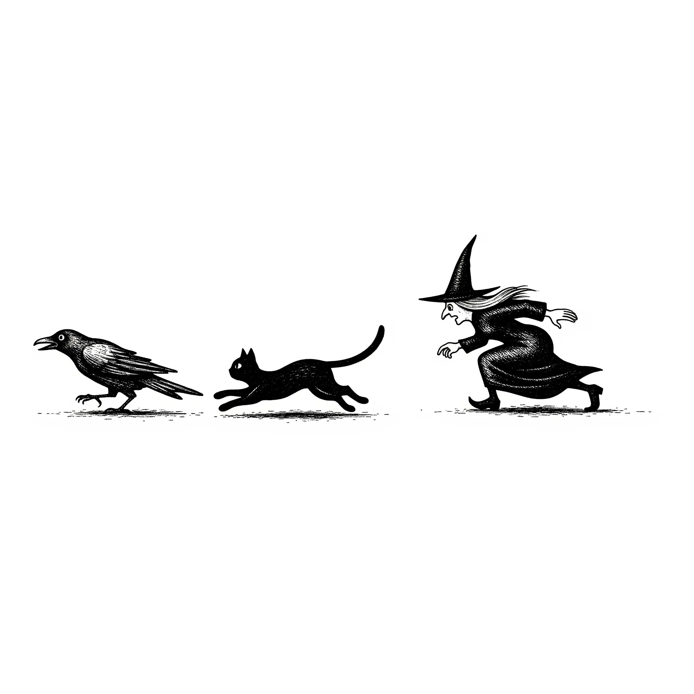

진저캣의 옆구리를 찌르는 경련은 뜨겁고 성난 바늘 같았다. 고양이는 위험을 무릅쓰고 뒤를 흘끗 돌아보았다. 그녀는 여전히 오고 있었다. 빠르지는 않았지만 느리지도 않은, 땅을 집어삼킬 듯한 끔찍하고 성큼거리는 걸음걸이로. 정말이지 끔찍하게 촌스러운 꽃무늬 보닛에 둘러싸인 그녀의 얼굴은 순수하고 추악한 욕망의 가면이었다.
[The cramp in the ginger cat’s side was a hot, angry needle. He risked a glance back. She was still coming. Not fast, but not slow either, a dreadful, loping rhythm that ate the ground. Her face, framed by a truly hideous floral bonnet, was a mask of pure, ugly desire.]
“담벼락 쪽으로, 재스퍼!” 위에서 거친 목소리가 들렸다.
[“To the wall, Jasper!” a voice rasped from above.]
잿빛 하늘을 배경으로 검은 얼룩처럼 번진 코르버스가 날개를 살짝 기울였다. 그 여자가 그토록 원하던 그의 부리가, 무성하게 자란 쐐기풀에 반쯤 가려진 회색 돌담을 가리켰다. 재스퍼는 대답할 숨도 아꼈다. 그는 편안했던 뱃살이 출렁일 정도로 몸을 납작하게 낮추고, 남은 힘을 쥐어짜 마지막 구간을 향해 쏟아부었다.
[Corvus, a smear of black against the grey sky, dipped a wing. His beak, the very thing the woman wanted, pointed toward a line of grey stones half-hidden by overgrown nettles. Jasper didn’t waste breath on a reply. He flattened his body, his comfortable belly fat jiggling with the effort, and poured what was left of his speed into the final stretch.]
그녀는 점점 가까워지고 있었다. 너무나 가까워져서 재스퍼는 그녀가 손을 드는 것을 보았다. 뿌리처럼 구부러진 손가락으로, 가시덤불의 가시들이 길어져 자신의 털을 향해 뻗어오게 만드는 주문을 중얼거렸다. 가시 하나가 꼬리에 걸리자 그는 낑 소리를 냈다. 가시와 쐐기풀이 얼굴을 후려쳤다. 땅을 통해 그녀의 발걸음 진동이 느껴졌다.
[She was getting closer; so close that Jasper saw her raise a hand, her fingers crooked like roots, and mutter a word that made the thorns on a briar patch lengthen and reach for his fur. He yelped as one snagged his tail. Thorns and nettles whipped at his face. He could feel the vibration of her footsteps through the earth.]
그는 허물어져 가는 담벼락 틈새로 몸을 비집고 들어갔고, 거친 돌이 등을 긁었다. 그는 반대편의 축축한 그늘에 웅크리고 앉았다. 폐가 타는 듯했다.
[He squeezed through a gap in the crumbling wall, the rough stone scraping his back. He huddled in the damp shadow of the other side, his lungs burning.]
"따돌렸을까?” 그가 위를 올려다보며 헐떡였다.
[“Did we lose her?” he panted, looking up.]
코르버스가 고개를 갸웃하며 담벼락 위로 소리 없이 내려앉았다. “멈췄어. 그리고… 공기 냄새를 맡고 있어.” 그는 몸을 떨었고, 그 떨림으로 목 깃털이 흩날렸다. “마치 쥐를 쫓는 개처럼. 부자연스러워.”
[Corvus landed silently on the wall, his head cocked. “She’s stopped. She’s… sniffing the air.” He shuddered, a motion that ruffled his neck feathers. “Like a dog sniffing for a rat. It’s unnatural.”]
재스퍼는 발을 핥기 시작했다. 거친 혀의 감촉이 작은 위안이 되었다. 그녀가 원한 것은 그의 발이었다. 네 개 모두. 김이 모락모락 나는 역겨운 솥에 넣고 휘저어질, 상상조차 하기 끔찍한 목적을 위해서. 그리고 코르버스의 부리도. 그 생각에 그는 차가운 돌에 몸을 더 바싹 붙였다.
[Jasper began licking his paw, the rough tongue a small comfort. It was his paws she wanted. All four of them. To be stirred into some steaming, foul pot for a purpose he couldn’t bear to imagine. And Corvus’s beak. The thought made him press closer to the cold stone.]
“돌아서고 있어.” 코르버스가 안도감에 잠긴 목소리로 까악거렸다. “길가로 향하고 있어.”
[“She’s turning away,” Corvus croaked, his voice tight with relief. “She’s heading for the road.”]
재스퍼가 무너진 돌 위로 살짝 엿보았다. 그 여자, 모델리나는 정말로 들판을 가로지르는 검은 아스팔트 포장도로를 향해 터벅터벅 걷고 있었다. 따뜻하고 어리석은 희망이 가슴속에서 피어올랐다.
[Jasper peeked over a loose stone. The woman, Maudelina, was indeed shuffling toward the strip of black tarmac that cut through the fields. Hope, warm and foolish, bloomed in his chest.]
그때 그들이 그것을 보았다. 날렵하고 어린 검은 고양이 한 마리가 차에 치여 있었다. 길가에 미동도 없이 누워 있었다.
[Then they saw it. A black cat, sleek and young, had been hit by a car. It lay still on the road’s edge.]
모델리나는 걸음을 재촉했다. 그녀는 죽은 동물 옆에 무릎을 꿇었다. 앞치마 주머니에서 작고 날카로운 칼을 꺼내 작업을 시작했다. 그 모습은 신속하고 끔찍할 정도로 실용적이었다. 그녀는 발들을 잘라내어 하나씩 주머니에 떨어뜨렸다. 부드럽고 축축한 퍽 소리가 났다.
[Maudelina quickened her pace. She knelt by the dead creature. With a small, sharp knife from her apron pocket, she began to work. It was quick, horribly practical. She sliced off the paws and dropped them, one by one, into her pocket. The sound was a soft, wet thud.]
그녀는 일어서서 칼날을 풀에 닦았다. 그리고 담벼락 너머, 바로 그들이 있는 곳을 쳐다보았다. 느릿한 미소가 그녀의 얼굴에 번졌다. 보기에도 끔찍한 미소였다. 그녀는 이제 필요한 것의 절반을 손에 넣었다.
[She stood up, wiping the blade on the grass. She looked over at the wall, directly at them. A slow smile spread across her face, a terrible thing to see. She now had half of what she needed.]
그녀의 시선은 하늘로, 저 위를 맴도는 다른 새들에게로 옮겨갔다. 아무 까마귀나 상관없었다. 꼭 코르버스일 필요는 없었다. 그녀의 미소는 더 활짝 벌어졌다.
[Her gaze shifted to the sky, to the other birds circling high above. Any crow would do. It didn’t have to be Corvus. Her smile widened.]
모델리나는 그들에게 보닛을 살짝 들어 보였다. 조롱하는 듯한 정중한 몸짓이었다. 그러고는 주머니가 약간 더 무거워진 채 돌아서서 어슬렁거리며 사라졌다.
[Maudelina tipped her bonnet at them, a gesture of mock politeness, before turning and ambling away, her pockets slightly heavier.]